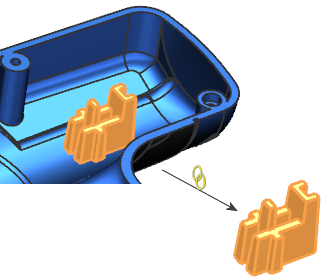

Estimated time to complete: 8–12 minutes
Linked Part Modules allow multiple designers to work concurrently on a single complex part. In this activity, you will follow the typical workflow for a design team. You will play the role of both the principal designer and the secondary designers.

Open the Collaborate on a single part design activity.